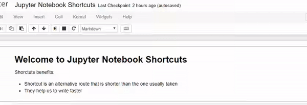

Keyboard Shortcuts Practice#
Taking a few minutes to learn certain Jupyter Notebook keyboard shortcuts has helped me be a more efficient Python developer. Below are the keyboard shortcuts I’ve found most useful.
Note: these keyboard shortcuts are for Jupyter version 4.1.0 and Mac OSX. For most shortcuts below, you can replace
cmdforCtrlandoptionforAltfor Windows or Linux. Or, you can use theHkeyboard shortcut in Windows or Linux to confirm the appropriate keyboard shortcuts for those operating systems.
Command vs. Edit Modes#
But first…something key to be aware of: Jupyter Notebooks have two different keyboard input modes:
Command mode - binds the keyboard to notebook level actions. Indicated by a grey cell border with a blue left margin.
Edit mode - when you’re typing in a cell. Indicated by a green cell border with a green left margin.
Experiment with switching between command and edit modes in this cell. Hint: If you’re in command mode, press Enter to enter edit mode. If you’re in edit mode, press Esc to enter command mode.
Command Mode#
Let’s practice the command mode first.
To start, select the next cell and press Shift + Enter to run that cell and select the next cell
print("You just ran the cell and selected the next cell")
With the next cell selected, press Ctrl + Enter to run the cell and keep the same cell selected
print("You just ran the cell and the focus stayed in that cell")
With the next cell selected, press Alt + Enter to run the cell and insert a new cell below
print("You just ran the cell and inserted a new cell below it")
Ctrl + S save and checkpoint.
Press A to insert a new cell above this one
Then, press B to insert a new cell below.
Copy the next cell with C and then paste it with V
print("copy me")
Delete the cell below by selecting it and press D D (i.e., hit the D button twice)
print("delete me")
Merge the following two cells by selecting the first one and then press Shift + M
First select the cells to merge by pressing Shift + ⬆ or ⬇
print("click me and then merge me with the next cell")
print("merge me with the cell above")
Undo the previous option using span Esc + Z
Experiment with changing the following cells to code and markdown modes
Y change the cell type to Code
M change the cell type to Markdown
```
print("I should be in Markdown mode. Type `M` to change me to markdown. Then type `shift` + `enter` to see the proper markup")
```
print(“I should be code. Select me and then type Y to change me to code mode”)
Edit Mode#
Use the Ctrl + hold left click to quickly change all occurences of variable_x to var_x.
variable_a = 1
variable_b = variable_a*2
variable_c = variable_a + variable_b
Use Alt + hold left click for column editing to easily indent each of the following linex_fix_indent
def my_func():
line1_fix_indent
line2_fix_indent
line3_fix_indent
line4_fix_indent
line5_fix_indent
line6_fix_indent
line7_fix_indent
line8_fix_indent
Select the entire text in the next cell and press Ctrl + / to toggle comment lines
print("this")
print("is")
print("a big")
print("block of")
print("text to comment")
Run the next cell to import numpy and then put your cursor next to the np. in the following cell. Then, press Tab to see what code completions are available
import numpy as np
np.
Put your cursor between the () in the np.arange() code below. Then press Shift + Tab to get the tooltip
np.arange()
Use Ctrl + Shift + - split the following cell between the two functions
def func1():
print("I'm func1. Separate me from func2")
def func2():
print("I'm ")
Command Palette#
Ctrl + Shift + P
Want quick access to all the commands in Jupyter Notebooks? Open the command palette with Ctrl + Shift + P and you’ll quickly be able to search all the commands!
View all keyboard shortcuts#
H (in Command mode)
These are the shortcuts I use in my daily work. If you still need something that is not mentioned here you can find it in the keyboard shortcuts dialog H. You can also edit existing or add more shortcuts from the Help ↪ Edit Keyboard Shortcuts link in the menu bar. Clicking the link will open a dialog. At the bottom of it there are rules for adding or editing shortcuts. You need to use hyphens - to represent keys that should be pressed at the same time.
For example, I added a shortcut Ctrl-R for the restart kernel and run all cells command.
Insert Image#
from IPython.display import Image
Image("img\logo.png")
Markdown#
For each sub-section: The first cell is code representation and next cell is the output representation in Markdown.
Headers#
# Heading 1
## Heading 2
### Heading 3
#### Heading 4
##### Heading 5
###### Heading 6
Alternatively, for H1 and H2, an underline-ish style:
Alt-H1
======
Alt-H2
------
Heading 1#
Heading 2#
Heading 3#
Heading 4#
Heading 5#
Heading 6#
Alternatively, for H1 and H2, an underline-ish style:
Alt-H1#
Alt-H2#
Emphasis#
Emphasis, aka italics, with *asterisks* or _underscores_.
Strong emphasis, aka bold, with **asterisks** or __underscores__.
Combined emphasis with **asterisks and _underscores_**.
Strikethrough uses two tildes. ~~Scratch this.~~
Emphasis, aka italics, with asterisks or underscores.
Strong emphasis, aka bold, with asterisks or underscores.
Combined emphasis with asterisks and underscores.
Strikethrough uses two tildes. ~~Scratch this.~~
Colors#
Use this code: <font color=blue|red|green|pink|yellow>Text</font> Not all markdown code works within a font tag, so review your colored text carefully!
<font color=red>Front color is blue</font>
<font color=blue>Front color is red</font>
<font color=magenta>Front color is yellow</font>
Use this code: Text Not all markdown code works within a font tag, so review your colored text carefully!
Front color is blue
Front color is red
Front color is yellow
Lists#
1. First ordered list item
2. Another item
* Unordered sub-list.
1. Actual numbers don't matter, just that it's a number
1. Ordered sub-list
4. And another item.
Some text that should be aligned with the above item.
* Unordered list can use asterisks
- Or minuses
+ Or pluses
1. Today's
2. date is:
* Monday
* 16th January 1991
- hello! how are
- how are you?
- Hope doing well
- [ ] Item A
- [x] Item B
- [x] Item C
First ordered list item
Another item
Unordered sub-list.
Actual numbers don’t matter, just that it’s a number
Ordered sub-list
And another item.
Some text that should be aligned with the above item.
Unordered list can use asterisks
Or minuses
Or pluses
Today’s
date is:
Monday
16th January 1991
hello! how are
how are you?
Hope doing well
[ ] Item A
[x] Item B
[x] Item C
Links#
Websites and References#
There are two ways to create links:
[I'm an inline-style link](https://www.github.com)
[Metric](https://en.wikipedia.org/wiki/Metric_(mathematics))
[Metric](https://en.wikipedia.org/wiki/Metric_%28mathematics%29)
[I'm a reference-style link][Arbitrary case-insensitive reference text]
[You can use numbers for reference-style link definitions][1]
Or leave it empty and use the [link text itself]
URLs and URLs in angle brackets will automatically get turned into links.
http://www.example.com or <http://www.example.com> and sometimes
example.com (but not on Github, for example).
Some text to show that the reference links can follow later.
[arbitrary case-insensitive reference text]: https://www.mozilla.org
[1]: http://slashdot.org
[link text itself]: http://www.reddit.com
You can use numbers for reference-style link definitions
Or leave it empty and use the link text itself
URLs and URLs in angle brackets will automatically get turned into links. http://www.example.com or http://www.example.com and sometimes example.com (but not on Github, for example).
Some text to show that the reference links can follow later.
Internal links in Jupyter#
There are two ways to create links:
<ul>
<li><a href="#lists">Lists</a></li>
</ul>
[Links](#links)
Links
Blockquotes#
> Blockquotes are very handy in email to emulate reply text.
> This line is part of the same quote.
> This line is also part of the same quote.
>> This line too.
Quote break.
> This is a very long line that will still be quoted properly when it wraps. Oh boy let's keep writing to make sure this is long enough to actually wrap for everyone. Oh, you can *put* **Markdown** into a blockquote.
Blockquotes are very handy in email to emulate reply text. This line is part of the same quote. This line is also part of the same quote.
This line too.
Quote break.
This is a very long line that will still be quoted properly when it wraps. Oh boy let’s keep writing to make sure this is long enough to actually wrap for everyone. Oh, you can put Markdown into a blockquote.
Inline HTML#
You can also use raw HTML in your Markdown, and it’ll mostly work pretty well.
<dl>
<dt>Definition list</dt>
<dd>Is something people use sometimes.</dd>
<dt>Markdown in HTML</dt>
<dd>Does *not* work **very** well. Use HTML <em>tags</em>.</dd>
</dl>
- Definition list
- Is something people use sometimes.
- Markdown in HTML
- Does *not* work **very** well. Use HTML tags.
Horizontal Rule#
Three or more...
---
Hyphens
***
Asterisks
___
Underscores
Three or more…
Hyphens
Asterisks
Underscores
Line Breaks#
My basic recommendation for learning how line breaks work is to experiment and discover – hit
Here are some things to try out:
Here's a line for us to start with.
This line is separated from the one above by two newlines, so it will be a *separate paragraph*.
This line is also a separate paragraph, but...
This line is only separated by a single newline, so it's a separate line in the *same paragraph*.
Here’s a line for us to start with.
This line is separated from the one above by two newlines, so it will be a separate paragraph.
This line is also a separate paragraph, but… This line is only separated by a single newline, so it’s a separate line in the same paragraph.
Code and Syntax Highlighting#
Code blocks are part of the Markdown spec, but syntax highlighting isn’t. However, many renderers – like Github’s and Markdown Here – support syntax highlighting. Markdown Here supports highlighting for dozens of languages (and not-really-languages, like diffs and HTTP headers).
Inline `code` has `back-ticks around` it.
Inline code has back-ticks around it.
Blocks of code are either fenced by lines with three back-ticks ```, or are indented with four spaces. I recommend only using the fenced code blocks – they’re easier and only they support syntax highlighting.
```javascript
var s = "JavaScript syntax highlighting";
alert(s);
```
```python
s = "Python syntax highlighting"
print s
```
```
No language indicated, so no syntax highlighting.
But let's throw in a <b>tag</b>.
```
var s = "JavaScript syntax highlighting";
alert(s);
s = "Python syntax highlighting"
print s
No language indicated, so no syntax highlighting.
But let's throw in a <b>tag</b>.
Tables#
Tables aren’t part of the core Markdown spec, but they are part of GFM and Markdown Here supports them. They are an easy way of adding tables to your email – a task that would otherwise require copy-pasting from another application.
Colons can be used to align columns.
Tables |
Are |
Cool |
|---|---|---|
col 3 is |
right-aligned |
$1900 |
col 2 is |
centered |
$12 |
col 1 is |
left-aligned |
$1 |
The outer pipes | are optional, and you don’t need to make the raw Markdown line up prettily. You can also use inline Markdown.
Markdown |
Less |
Pretty |
|---|---|---|
Still |
|
nicely |
1 |
2 |
3 |
Colons can be used to align columns.
| Tables | Are | Cool |
|:------------- |:-------------:| ------:|
| col 3 is | right-aligned | \$1900 |
| col 2 is | centered | \$12 |
| col 1 is | left-aligned | \$1 |
The outer pipes **`|`** are optional, and you don't need to make the raw Markdown line up prettily. You can also use inline Markdown.
Markdown | Less | Pretty
--- | --- | ---
*Still* | `renders` | **nicely**
1 | 2 | 3
Table - rowspan#
| column 1 | column 2 | column 3 |
|---|---|---|
| row 1 - column 1 | row 1 - column 2 | row 1 & 2 - column 3 |
| row 2 - column 1 | row 2 - column 2 |
<table>
<tr>
<th>column 1</th>
<th>column 2</th>
<th>column 3</th>
</tr>
<tr>
<td>row 1 - column 1</td>
<td>row 1 - column 2</td>
<td rowspan="2" align="center">row 1 & 2 - column 3</td>
</tr>
<tr>
<td>row 2 - column 1</td>
<td>row 2 - column 2</td>
</tr>
</table>
Table - colspan#
| column 1 | column 2 | column 3 |
|---|---|---|
| row 1 - column 1 | row 1 - column 2 & 3 | |
| row 2 - column 1 | row 2 - column 2 | row 2 - column 3 |
<table>
<tr>
<th>column 1</th>
<th>column 2</th>
<th>column 3</th>
</tr>
<tr>
<td>row 1 - column 1</td>
<td colspan="2" align="center">row 1 - column 2 & 3</td>
</tr>
<tr>
<td>row 2 - column 1</td>
<td>row 2 - column 2</td>
<td>row 2 - column 3</td>
</tr>
</table>
Images#
Images - Representation#
 Image: description
Image: description
 Image: description
Image: description
|
|---|
Hi-Five |
|
|---|
Space |


***Image:*** *description*

***Image:*** *description*
<img src="https://media.giphy.com/media/XRB1uf2F9bGOA/giphy.gif" width=200/>
| <img src="https://media.giphy.com/media/XRB1uf2F9bGOA/giphy.gif" width="200"/> |
|:--:|
| **Hi-Five** |
|  |
|:--:|
| *Space* |

Image Align - Middle (default)#
Image align to Center.  .
.
#### Image Align - Middle _(default)_
Image align to Center. <img src="img/icon.png" width="42" height="42">.
Image Align - Left#
Image align to left.
#### Image Align - *Left*
Image align to left<img src="img/left.png" alt="left face" align="left" width="42" height="42">.
Image Align - Right#
Image align to right.
#### Image Align - *Right*
<img src="img/right.png" alt="right" align="right" width="42" height="42"> Image align to right.
YouTube Videos#
They can’t be added directly but you can add an image with a link to the video like this:
<a href="http://www.youtube.com/watch?feature=player_embedded&v=YOUTUBE_VIDEO_ID_HERE
" target="_blank"><img src="http://img.youtube.com/vi/YOUTUBE_VIDEO_ID_HERE/0.jpg"
alt="IMAGE ALT TEXT HERE" width="240" height="180" border="10" /></a>

Example:
<a href="https://www.youtube.com/watch?v=w3jLJU7DT5E&ab_channel=GitHub" target="_blank"><img src="img/youtube.png"
alt="IMAGE ALT TEXT HERE" width="240" height="180" border="10" /></a>
Or, in pure Markdown, but losing the image sizing and border:
[](http://www.youtube.com/watch?v=YOUTUBE_VIDEO_ID_HERE)
Example:
[](https://www.youtube.com/watch?v=w3jLJU7DT5E&ab_channel=GitHub)

TeX Mathematical Formulae#
A full description of TeX math symbols is beyond the scope of this cheatsheet. Here’s a good reference, and you can try stuff out on CodeCogs. You can also play with formula in the Markdown Here options page.
Here are some examples to try out:
<img src="https://latex.codecogs.com/svg.latex?\Large&space;x=\frac{-b\pm\sqrt{b^2-4ac}}{2a}" title="\Large x=\frac{-b\pm\sqrt{b^2-4ac}}{2a}" />


Here is a simple script to convert the equation into html: https://jsfiddle.net/8ndx694g/
Step 1: Paste LaTex Equation
x = a_0 + \frac{1}{a_1 + \frac{1}{a_2 + \frac{1}{a_3 + a_4}}}
Step 2: Click on “Econdode to github render URL”
<img src="https://render.githubusercontent.com/render/math?math=x%20%3D%20a_0%20%2B%20%5Cfrac%7B1%7D%7Ba_1%20%2B%20%5Cfrac%7B1%7D%7Ba_2%20%2B%20%5Cfrac%7B1%7D%7Ba_3%20%2B%20a_4%7D%7D%7D">
Step 3: Copy and Paste genrated URL
$-b \pm \sqrt{b^2 - 4ac} \over 2a$
$x = a_0 + \frac{1}{a_1 + \frac{1}{a_2 + \frac{1}{a_3 + a_4}}}$
$\forall x \in X, \quad \exists y \leq \epsilon$
$-b \pm \sqrt{b^2 - 4ac} \over 2a$ $x = a_0 + \frac{1}{a_1 + \frac{1}{a_2 + \frac{1}{a_3 + a_4}}}$ $\forall x \in X, \quad \exists y \leq \epsilon$
The beginning and ending dollar signs $ are the delimiters for the TeX markup.